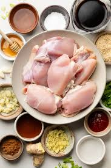

Korean barbeque fried chicken
Korean fried chicken, in Korean chikin (Korean: 치킨, from the English word "chicken"), refers to a variety of fried chicken dishes created in South Korea. These include the basic huraideu-chicken (후라이드 치킨, from the English words 'fried chicken') and the spicy yangnyeom chicken (양념 치킨, 'seasoned chicken').
In South Korea, fried chicken is consumed as a meal, an appetizer, anju (food that is served and eaten with drinks), or as an after-meal snack.
Ingredients

- 2 pounds chicken wings
- ½ teaspoon kosher salt
- ½ teaspoon ground black pepper
- ½ cup potato starch
- ¼ cup all purpose flour
- ½ teaspoon baking soda
- 2 large eggs
- 1 tablespoon toasted sesame seeds
Steps
- Heat 2 inches of oil in a large heavy frying pan or pot over medium hight heat for about 10 to 12 minutes until the oil temperature reaches 330-350ºF.
- While the oil is heating, combine chicken, salt, ground black pepper, starch, flour, baking soda, and eggs in a large bowl. Mix altogether well by hand.
- Add the coated chicken to hot oil one by one. Fry them for 12 minutes until the all sides of the chicken are golden brown and crunchy, turning over with tongs.
- Take out the chicken with tongs or a large slotted spoon to wire strainer over a bowl to remove the excess oil.
Homepage